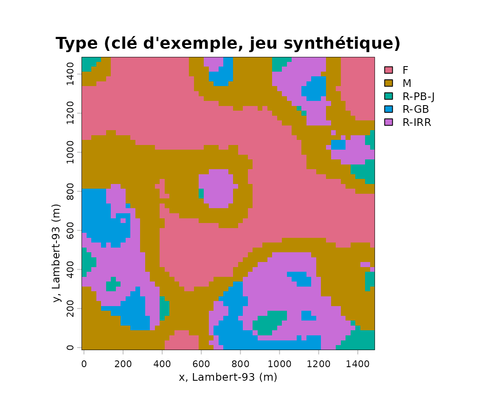
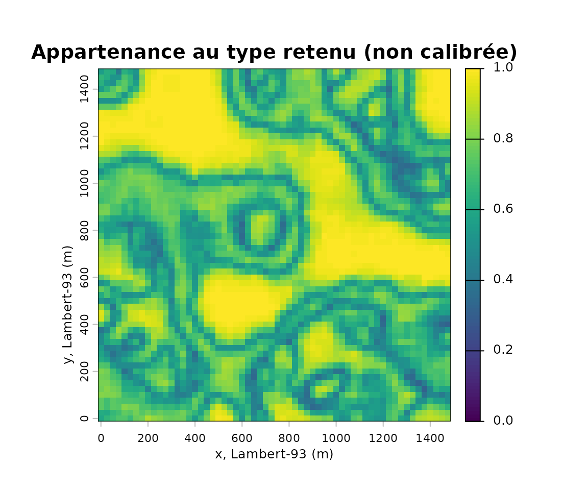
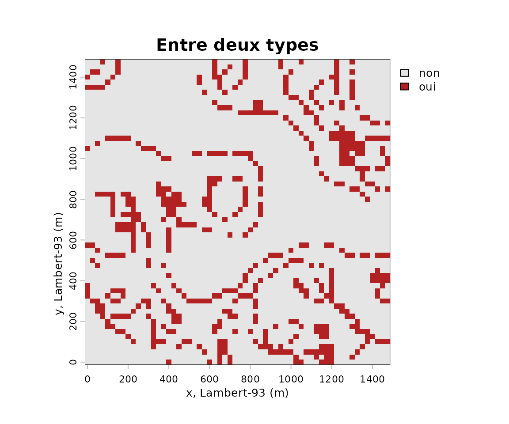

Résultats sur l'AOI pilote
Source:vignettes/articles/resultats-aoi-pilote.Rmd
resultats-aoi-pilote.RmdPas encore de carte réelle de Léoncel. L’AOI pilote est la forêt domaniale de Léoncel plus les forêts privées voisines dans la SER H10 (Préalpes du Nord). Tant que ses livrables ne sont pas calculés, cet article montre la démonstration sur jeu synthétique : elle prouve que le rapport se fabrique et dit ce qu’il doit dire, elle ne décrit aucune forêt. Les chiffres ci-dessous ne valent rien sur données réelles.
Ce que contient un rapport d’AOI
Pour une AOI déjà calculée, le pipeline (_targets.R)
rend un rapport Quarto :
- les cartes des types, une par légende présente dans les livrables (SRGS d’abord, puis GSM) ;
- la couche de confiance : appartenance au type retenu, drapeaux (entre deux types, hauteur potentielle incertaine, hors clé, strates basses estimées) ;
- un tableau état de preuve : pour chaque chiffre, mesuré, provisoire ou non vérifié ;
- une section Limites.
Démonstration (jeu synthétique)
dossier <- file.path(tempdir(), "livrables_demo")
res <- lancer_demo(dossier, graine = 0)
types <- terra::rast(file.path(dossier, "types.tif"))
corr <- utils::read.csv(file.path(dossier, "correspondance_types.csv"), fileEncoding = "UTF-8")
r <- types[["type"]]
levels(r) <- data.frame(valeur = corr$valeur, type = corr$code)
terra::plot(r, main = "Type (clé d'exemple, jeu synthétique)", mar = c(3.5, 5, 3.5, 7),
xlab = "x, Lambert-93 (m)", ylab = "y, Lambert-93 (m)",
col = grDevices::hcl.colors(nrow(corr), "Dark 3"))
Le nombre associé au type est une appartenance, non calibrée : ce n’est pas une probabilité (arbitrage C12).
terra::plot(types[["proba"]], range = c(0, 1), mar = c(3.5, 5, 3.5, 7),
xlab = "x, Lambert-93 (m)", ylab = "y, Lambert-93 (m)",
main = "Appartenance au type retenu (non calibrée)")
Une carte de drapeau : les pixels « entre deux types », où le second type est presque aussi plausible que le premier.
d <- terra::ifel(types[["entre_deux"]] > 0, 1, 0)
levels(d) <- data.frame(valeur = 0:1, drapeau = c("non", "oui"))
terra::plot(d, col = c("grey90", "firebrick"), mar = c(3.5, 5, 3.5, 7),
xlab = "x, Lambert-93 (m)", ylab = "y, Lambert-93 (m)",
main = "Entre deux types")
État de preuve
knitr::kable(etat_de_preuve(dossier, demo = TRUE))| chiffre | statut | commentaire |
|---|---|---|
| Tous les chiffres de ce rapport | non vérifié | Jeu synthétique et clé d’exemple : démonstration du pipeline, aucune forêt réelle. |
| Validation indépendante de la carte | non vérifié | Aucune validation indépendante. La carte est produite, non validée. Aucune placette indépendante géolocalisée au pixel dans la SER H10 ; les placettes IFN, publiées au kilomètre, ne valident que des agrégats (ADR 0010). |
| Nombre de pixels, part de chaque type, part de chaque drapeau | mesuré | Comptage direct sur les rasters livrés ; ce n’est pas une exactitude. |
| Type d’un pixel | non vérifié | Sortie de la clé appliquée aux variables modélisées ; non confrontée à des relevés indépendants. |
| Appartenance au type | provisoire | Non calibrée : ce n’est pas une probabilité (arbitrage C12) ; à lire en ordre, pas en valeur. |
| Seuils de la clé (diamètre, couvert, hauteur) | provisoire | Seuils par référentiel (ADR 0007), certains encore provisoires dans la configuration. |
| Hauteur potentielle | provisoire | Modèle appris sur les adultes fermés ; H0 du jeu ONF non calibrée (fiche ONF, p. 2). |
| Précision et kappa de la fiche de validation | non vérifié | Calculés sur placettes synthétiques : sans valeur sur données réelles. |
La carte est produite et non validée : aucune placette indépendante n’est géolocalisée au pixel dans la SER H10 (les placettes IFN, publiées au kilomètre, ne valident que des agrégats), il n’y a donc aucune validation indépendante (ADR 0006, 0010).
Limites
cat(paste0("- ", limites_rapport(dossier, demo = TRUE)), sep = "\n")- Jeu synthétique et clé d’exemple : aucune de ces cartes ne décrit une forêt réelle.
- La carte est une aide à la décision, pas un diagnostic : elle ne remplace pas la visite de terrain (typologie descriptive).
- Pas de validation indépendante : la carte est produite et non validée. Aucune placette indépendante géolocalisée au pixel dans la SER H10 ; les placettes IFN, publiées au kilomètre, ne valident que des agrégats (ADR 0010).
- Hors clé : 0,0 % des pixels ne correspondent à aucun type de la clé.
- Entre deux types : 15,1 % des pixels, où le second type est presque aussi plausible que le premier.
- Hauteur potentielle incertaine sur 0,0 % des pixels : les types qui en dépendent y sont moins sûrs.
- Type GSM (H10) : types de la légende absents de la carte : R-PB-C.